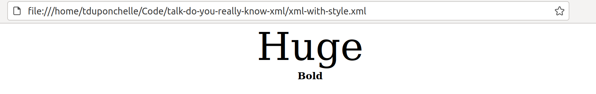

Do you really know XML?
A talk about XML? Seriously? 😬
XML is like Perl... <p class="fragment">Old...</p> <p class="fragment">Reliable...</p> <p class="fragment">Ubiquitous..</p> <p class="fragment">And not trendy! 😅 </p>
Since everybody knows everything about XML, so let's start with a game: <p class="fragment">Valid or not valid?! 🤔 </p>
Blank after tag name? ```xml <root > ``` <p class="fragment">Valid</p>
Blank before tag name? ```xml < root> ``` <p class="fragment">Not valid!</p>
Attribute in closing tag? ```xml </a attribute="value"> ``` <p class="fragment">Not valid!</p>
Valid XML? ```xml <person> <name>Tib</name> <age>35</age> </person> <person> <name>Max</name> <age>36</age> </person> ``` <p class="fragment">Not valid!</p> <p class="fragment">(multiple roots)</p>
What is the value of attribute a? ```xml <root> <tag a="b" a="c"/> </root> ``` <p class="fragment"> Actually it's not valid! </p>
Comment in attribute? ```xml <root> <name attr="va<!-- Comment -->lue" /> </root> ``` <p class="fragment">Not valid!</p>
Dash in comment? ```xml <root> <!-- - - Comment - - --> </root> ``` <p class="fragment">Valid</p>
Nested comment? ```xml <root> <!-- A comment with another <!-- comment --> inside --> </root> ``` <p class="fragment">Not valid!</p>
Dash in comment? ```xml <root> <!-- Comment ---> </root> ``` <p class="fragment">Not valid!</p>
Comment at the end? ```xml <?xml version="1.0"?> <root> <name attr="value"/> </root> <!-- Comment --> ``` <p class="fragment">Valid</p>
Comment at the beginning? ```xml <!-- Comment --> <?xml version="1.0"?> <root> <name attr="value"/> </root> ``` <p class="fragment">Not valid!</p>
We just had a look at some syntax things... <p class="fragment">Maybe realizing that XML is not that simple...</p>
What about security now?
Injections
XXE with entities ```xml [|4,5,11,12] <?xml version="1.0"?> <!DOCTYPE book PUBLIC "-//OASIS//DTD DocBook V4.1.2//EN" "http://www.oasis-open.org/docbook/xml/4.0/docbookx.dtd" [ <!ENTITY japh "<strong>Just another Perl hacker,</strong>"> <!ENTITY inc SYSTEM "inc.xml"> <!ENTITY pwd SYSTEM "/etc/passwd"> ]> <catalog version="1.0" xmlns:xsl="http://www.w3.org/1999/XSL/Transform" xmlns:xi="http://www.w3.org/2001/XInclude"> <!--&japh;--> &japh; &inc; &pwd; </catalog> ```
XXE with XInclude ```xml [|7] <catalog version="1.0" xmlns:xsl="http://www.w3.org/1999/XSL/Transform" xmlns:xi="http://www.w3.org/2001/XInclude"> <book id="bk101"> <author>Chromatic</author> <title>Modern Perl</title> </book> <xi:include href="/etc/passwd" parse="text"/> <book id="bk112"> <author>Damian Conway</author> <title>Perl Best Practices</title> </book> </catalog> ```
Server Side Request Forgery ```xml [|3,7] <?xml version="1.0"?> <!DOCTYPE book PUBLIC "-//OASIS//DTD DocBook V4.1.2//EN" "http://www.oasis-open.org/docbook/xml/4.0/docbookx.dtd" [ <!ENTITY ssrf SYSTEM "http://tryperl.pl"> ]> <catalog version="1.0" xmlns:xsl="http://www.w3.org/1999/XSL/Transform" xmlns:xi="http://www.w3.org/2001/XInclude"> &ssrf; </catalog> ```
DoS
Billion Laughs Attack ```xml <?xml version="1.0"?> <!DOCTYPE lolz [ <!ENTITY lol "lol"> <!ENTITY lol1 "&lol;&lol;&lol;&lol;&lol;&lol;&lol;&lol;&lol;&lol;"> <!ENTITY lol2 "&lol1;&lol1;&lol1;&lol1;&lol1;&lol1;&lol1;&lol1;&lol1;&lol1;"> <!ENTITY lol3 "&lol2;&lol2;&lol2;&lol2;&lol2;&lol2;&lol2;&lol2;&lol2;&lol2;"> <!ENTITY lol4 "&lol3;&lol3;&lol3;&lol3;&lol3;&lol3;&lol3;&lol3;&lol3;&lol3;"> <!ENTITY lol5 "&lol4;&lol4;&lol4;&lol4;&lol4;&lol4;&lol4;&lol4;&lol4;&lol4;"> <!ENTITY lol6 "&lol5;&lol5;&lol5;&lol5;&lol5;&lol5;&lol5;&lol5;&lol5;&lol5;"> <!ENTITY lol7 "&lol6;&lol6;&lol6;&lol6;&lol6;&lol6;&lol6;&lol6;&lol6;&lol6;"> <!ENTITY lol8 "&lol7;&lol7;&lol7;&lol7;&lol7;&lol7;&lol7;&lol7;&lol7;&lol7;"> <!ENTITY lolz "&lol8;"> ]> <root>&lolz;</root> ```
Quadratic Blowup ```xml [|4,9,10] <?xml version="1.0"?> <!DOCTYPE blowup [ <!ENTITY Boom "oOoOoOoOoOoOoOoOoOoOoOoOoOoOoOoOoOoOoOoO..."> ]> <blowup> &Boom;&Boom;&Boom;&Boom;&Boom;&Boom; &Boom;&Boom;&Boom;&Boom;&Boom;&Boom; ... </blowup> ``` (similar to Billion Laughs)
Other threats * XPath injections * XSLT injections * Decompression bomb (compressed input)
Now... Let's look at some lesser-known XML features.
Auto close tags ```xml <?xml version="1.0"?> <root><a></a></root> ``` When processed: ```xml <?xml version="1.0"?> <root><a/></root> ```
xml:space ```xml <root> <a/> <b/> <c xml:space="preserve"> <d/> <e/> <f/> </c> </root> ``` Tell to parser about how ignorable are blanks ```xml $ xmllint test.xml --noblanks master ✱ ◼ <?xml version="1.0"?> <root><a/><b/><c xml:space="preserve"> <d/> <e/> <f/> </c></root> ```
Default attribute ```xml [|5] <?xml version="1.0"?> <!DOCTYPE root [ <!ELEMENT root (elem)* > <!ELEMENT elem EMPTY> <!ATTLIST elem a (b|c) 'b'> ]> <root> <elem/> </root> ``` When processed (firefox, xmllint...): ```xml [|3] <?xml version="1.0"?> <root> <elem a="b"/> </root> ```
With [XML::LibXML](https://metacpan.org/pod/XML::LibXML) you have to force completion: ```perl my $parser = XML::LibXML->new(complete_attributes => 1); ``` With xmllint you have to use --dtdattr: ``` xmllint --dtdattr data.xml ``` (security...)
A word about some XML parsers available in Perl: * [XML::LibXML](https://metacpan.org/pod/XML::LibXML) - Based on C libxml2 * [XML::Parser](https://metacpan.org/pod/XML::Parser) - Based on C expat * [XML::Simple](https://metacpan.org/pod/XML::Simple) - Discouraged by his author * [XML::Twig](https://metacpan.org/pod/XML::Twig)
<img data-src="img/camelia.png"> XML parsers available in Raku: * [XML](https://github.com/raku-community-modules/XML) - Pure Raku implementation * [LibXML](https://modules.raku.org/dist/LibXML:cpan:WARRINGD) - Based on C libxml2 * [XML::XPath](https://modules.raku.org/dist/XML::XPath:cpan:UFOBAT)
My favorite is [XML::LibXML](https://metacpan.org/pod/XML::LibXML) ❤️
As I said, [XML::LibXML](https://metacpan.org/pod/XML::LibXML) is based on [libxml2](http://www.xmlsoft.org/)
From libxml2, the list of possible parsed node types: ``` * XML_ELEMENT_NODE * XML_ATTRIBUTE_NODE * XML_TEXT_NODE * XML_CDATA_SECTION_NODE * XML_ENTITY_REF_NODE * XML_ENTITY_NODE * XML_PI_NODE * XML_COMMENT_NODE * XML_DOCUMENT_NODE * XML_DOCUMENT_TYPE_NODE * XML_DOCUMENT_FRAG_NODE ``` (include/libxml/tree.h)
Plus some others: ``` * XML_NOTATION_NODE * XML_HTML_DOCUMENT_NODE * XML_DTD_NODE * XML_ELEMENT_DECL * XML_ATTRIBUTE_DECL * XML_ENTITY_DECL * XML_NAMESPACE_DECL * XML_XINCLUDE_START * XML_XINCLUDE_END * XML_DOCB_DOCUMENT_NODE ```
(I save you from *internal* types)
Do you know all these types? <p class="fragment"></p> <p class="fragment">(I still love you, old meme)</p>
With [XML::LibXML](https://metacpan.org/pod/XML::LibXML) you can get them with: ```perl $child->nodeType ``` And also partially (inconsistent) with: ```perl $child->nodeName ```
With xmllint you can get them (more or less) with: ``` $ xmllint --debug data.xml ```
e.g. List types of first level and second level children: ```perl use 5.010; use XML::LibXML; my $parser = XML::LibXML->new(); my $tree = $parser->parse_file("data.xml"); foreach my $flc ($tree->childNodes()) { say "First level child nodes types: " . $flc->nodeType; foreach $slc ($flc->childNodes()) { say " Second level child nodes types: " . $slc->nodeType; } } ```
Some types are obvious...
XML_DOCUMENT_NODE The document itself ```perl use 5.010; use XML::LibXML; my $parser = XML::LibXML->new(); my $tree = $parser->parse_file("data.xml"); say "Tree node type: " . $tree->nodeType; say "Tree node name: " . $tree->nodeName; ```
XML_ELEMENT_NODE ``` <tag></tag> or <tag/> ```
XML_ATTRIBUTE_NODE ``` <tag attribute="value"> ```
With [XML::LibXML](https://metacpan.org/pod/XML::LibXML) you can do something like: ```perl use 5.010; use XML::LibXML; my $parser = XML::LibXML->new(); my $tree = $parser->parse_file("data.xml"); foreach my $flc ($tree->childNodes()) { foreach my $att ($flc->attributes()) { say "Attribute name: " . $att->nodeName; say "Attribute value: " . $att->value; } } ```
XML_TEXT_NODE ```xml Some<a>text</a> or <b att="Some Text"/> ```
XML_COMMENT_NODE ``` <!-- comment --> ```
XML_CDATA_SECTION_NODE ``` <![CDATA[<sender>John Smith</sender>]]> ``` (CDATA is interpreted literally)
XML_ENTITY_REF_NODE ``` &entity; ```
With [XML::LibXML](https://metacpan.org/pod/XML::LibXML) you have to force entity expansion: ```perl my $parser = XML::LibXML->new(expand_entities => 1); ``` (security...)
XML_DTD_NODE ``` <!DOCTYPE book PUBLIC "blahblah" "http://www.example.com/docbookx.dtd" [ ```
XML_ELEMENT_DECL ``` <!ELEMENT element-name EMPTY> ```
XML_ATTRIBUTE_DECL ``` <!ATTLIST image height CDATA #REQUIRED> ```
XML_ENTITY_DECL ``` <!ENTITY japh "<strong>Just Another Perl Hacker,</strong>"> ```
XML_NAMESPACE_DECL ``` <catalog xmlns:xsl="http://www.w3.org/1999/XSL/Transform"> ```
XML_PI_NODE ``` <?xml-stylesheet href="style.css"> ``` (PI stands for Processing Instruction)
Because you can stylize a XML with a stylesheet: ``` <?xml-stylesheet href="style.css"> <root> <huge>Huge</huge> <bold>Bold</bold> </root> ``` With `style.css`: ```css root { text-align: center; } huge { font-size: 400%; display: block; } bold { font-weight: bold; display: block; } ```
Result: 
XML_XINCLUDE_START / XML_XINCLUDE_END ``` <xi:include href="inc.xml"/> ``` Added by the parser when processing the XIncludes Can be disabled with: ``` $ xmllint --xinclude --noxincludenode ```
With [XML::LibXML](https://metacpan.org/pod/XML::LibXML) you have to force xincludes processing: ```perl [|5] my $parser = XML::LibXML->new(); my $tree = $parser->parse_file("data.xml"); $parser->process_xincludes($tree); ``` (security...)
OK it was not so hard until now... But what about: * XML_DOCUMENT_TYPE_NODE * XML_DOCUMENT_FRAG_NODE * XML_DOCB_DOCUMENT_NODE * XML_ENTITY_NODE * XML_NOTATION_NODE * XML_HTML_DOCUMENT_NODE
XML_DOCUMENT_TYPE_NODE Deprecated, use XML_DTD_NODE instead <p class="fragment">First trap dodged! 😏 </p>
XML_DOCUMENT_FRAG_NODE Never read, only *created* and used when *writing* XML. <p class="fragment">This is not fair! 🤨 </p>
XML_DOCB_DOCUMENT_NODE ``` #ifdef LIBXML_DOCB_ENABLED ,XML_DOCB_DOCUMENT_NODE= 21 #endif ``` Deprecated, related to docbooks <p class="fragment"> 😐 </p>
XML_ENTITY_NODE <p class="fragment">It's a mystery!</p> <p class="fragment"> 😵 </p>
XML_NOTATION_NODE ``` <!NOTATION GIF SYSTEM "GIF"> ``` An obscure XML feature for file association <p class="fragment"> 🥴 </p>
XML_HTML_DOCUMENT_NODE The document itself but in *HTML context* ``` $ xmllint --html data.html ``` <p class="fragment"> 🧐 </p>
It took me some time to understand these... 🤓
Why do I dug into XML spec?
Because I wrote [XML::Minifier](https://metacpan.org/pod/XML::Minifier) 😊
Minifying XML is everything but obvious! 😩
You probably agree with me to minify this XML: ```xml <people> <person> <name>Tib</name> <age>35</age> </person> <person> <name>Max</name> <age>36</age> </person> </people> ``` Like this: ```xml <people><person><name>Tib</name><age>35</age></person><person><name>Max</name><age>36</age></person></people> ```
Seems obvious because humans put data in leafs! <p class="fragment">But it is wrong according to XML spec...</p>
Not ignorable blanks (XML spec): ```xml <people> ❌ <person> ❌ <name>Tib</name> ❌ <age>35</age> ❌ </person> ❌ <person> ❌ <name>Max</name> ❌ <age>36</age> ❌ </person> ❌ </people> ```
If you still hesitate, think HTML! ```xml <div class="ephemeral"> To be <strong>convinced</strong> you should think about <a href="http://example.com">HTML</a> document where tags and text are completely mixed together! </div> ``` Lot of text ouside leafs!
If only we had a DTD or a schema describing the XML structure... ```xml [|4,13] <!DOCTYPE ephemeral [ <!ELEMENT people (person*)> <!ELEMENT person (name,age)> <!ELEMENT name (#PCDATA)> <!ELEMENT age (#PCDATA)> ]> <people> <person> <name>Tib</name> <age>35</age> </person> <person> <name> </name> <!-- Will stay --> <age>36</age> </person> </people> ``` (`#PCDATA` is text with meaningful whitespace)
Or with `xml:space` attributes: ```xml [|1,3,4,7,8] <people xml:space="default"> <person> <name xml:space="preserve">Tib</name> <age xml:space="preserve">35</age> </person> <person> <name xml:space="preserve">Max</name> <age xml:space="preserve">36</age> </person> </people> ```
xml:space can be in DTD: ```xml [|3,5,6] <!DOCTYPE ephemeral [ <!ELEMENT people (person*)> <!ATTLIST people xml:space (default|preserve) "default"> <!ELEMENT person (name,age)> <!ATTLIST name xml:space (default|preserve) "preserve"> <!ATTLIST age xml:space (default|preserve) "preserve"> ]> ```
Even without these hints, it's still valuable approach <p class="fragment">because it's DWIM (Do What I Mean) for humans</p> <p class="fragment">but it is clearly "lossy minification"</p>
Going further in DWIM
Protect (text) siblings: ```xml <root> <tag>Protect my empty <strong>sibling</strong> </tag> </root> ``` Minified as: ```xml <root><tag>Protect my empty <strong>sibling</strong> </tag></root> ```
Protecting leafs: ```xml <root> <tag> </tag> </root> ``` Minified as: ```xml <root><tag> </tag></root> ``` (leafs are where humans usually put data in XML)
This "DWIM mode" is just a part of [XML::Minifier](https://metacpan.org/pod/XML::Minifier) <p class="fragment">There is a "lossy-less" minification</p> <p class="fragment">and also an "agressive mode"</p>
But as you may conclude with me <p class="fragment">the journey is more interesting than the destination!</p>
Links: - [XML Spec](https://www.w3.org/TR/REC-xml/) - [XML::LibXML](https://metacpan.org/pod/XML::LibXML) - [libxml2](http://www.xmlsoft.org/) - [XML::Minifier](https://metacpan.org/pod/XML::Minifier)
Thank you!